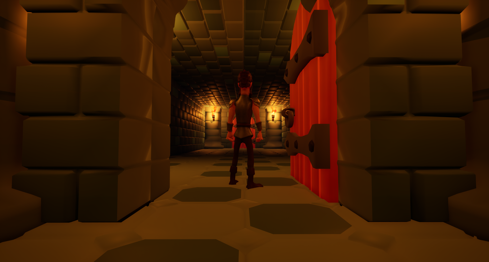
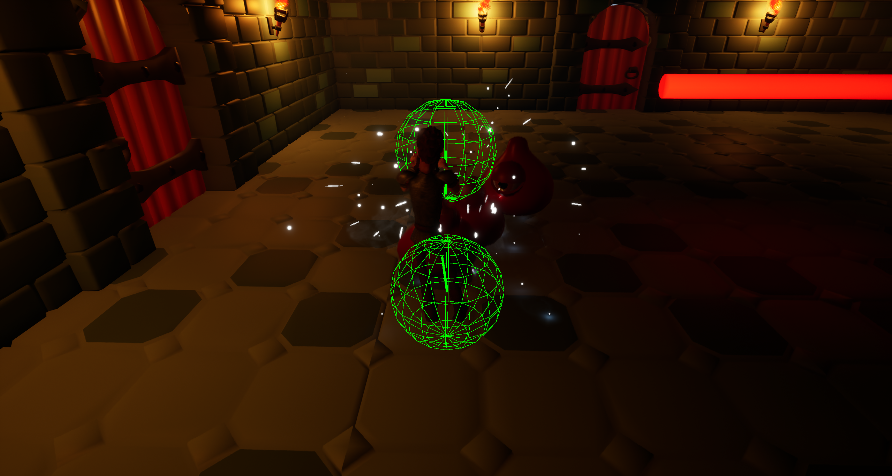
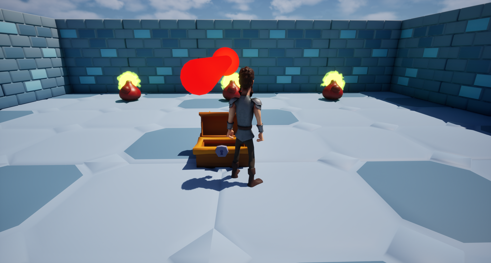
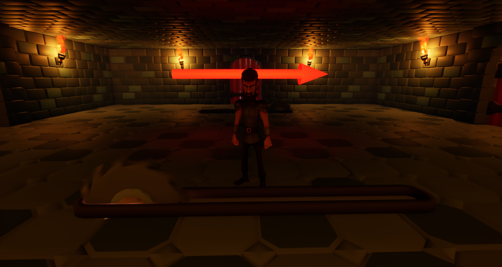

AbyssGen
절차적 던전 생성에서 전투·AI·함정·콘텐츠 배치까지 확장한 Unreal Engine 5 게임 프로젝트
보고서 요약
AbyssGen은 동일한 시드로 동일한 던전을 재현하면서도, 방·몬스터·함정·보상 구성이 달라지는 플레이 공간을 자동 생성하기 위해 시작된 Unreal Engine 5 프로젝트다.
기술 구성
| 구분 | 적용 기술 | 역할 |
|---|---|---|
| 엔진/언어 | Unreal Engine 5, C++, Blueprint | C++로 런타임 시스템을 구성하고 Blueprint로 방 콘텐츠와 연출을 제작 |
| 절차 생성 | FRandomStream, 모듈형 Room, Exit 스냅 | 시드 재현성과 확장 가능한 방 조립 방식 제공 |
| AI | StateTree, GameplayStateTree | 몬스터의 탐지·추적·공격 상태를 데이터 중심으로 제어 |
| 설계 | Composition, SRP, Interface | 액터의 책임을 컴포넌트로 분리하고 시스템 간 결합도를 낮춤 |
서론
1.1 프로젝트 시작 목적
고정된 맵은 제작자가 의도한 경험을 안정적으로 제공하지만, 반복 플레이에서는 공간과 사건의 예측 가능성이 높아진다. AbyssGen은 이 문제를 해결하기 위해 실행할 때마다 다른 던전을 자동 생성하고, 생성 결과를 게임 플레이까지 연결하는 방법을 탐구하는 프로젝트로 시작되었다.
초기 개발은 절차 생성 알고리즘 자체를 검증하는 데 초점을 두었다. 무작위로 생성한 방을 분리하고, 방 중심점을 Delaunay 삼각분할로 연결한 뒤, Kruskal 알고리즘으로 최소 신장 트리를 구성하여 던전의 연결성을 확보했다. 이 단계는 “어떻게 무작위 공간을 연결 가능한 던전으로 변환할 것인가”에 대한 기술 실험이었다.
개발이 진행되면서 목표는 단순한 레이아웃 시각화에서 실제로 탐험하고 전투할 수 있는 게임 공간으로 확장되었다. 이에 따라 현재 프로젝트는 다음 네 가지 목적을 가진다.
재현 가능한 생성
하나의 시드가 방 선택, 출구 선택, 콘텐츠 확률을 모두 통제하여 오류 재현과 밸런스 비교를 가능하게 한다.
모듈형 제작
방 Blueprint를 독립적인 모듈로 제작하고 출구 트랜스폼만 맞추어 다양한 던전을 조립한다.
플레이 시스템 결합
생성된 공간에 몬스터, 전투, 함정, 보상, 상호작용을 배치하여 게임 루프를 완성한다.
유지보수 가능한 구조
거대한 액터를 책임별 컴포넌트와 인터페이스로 분해해 기능 추가와 교체 비용을 낮춘다.
1.2 프로젝트 구성
핵심 시스템은 절차적 던전을 담당하는 PDG, 체력과 공격을 담당하는 Combat, StateTree AI와 몬스터 행동을 담당하는 Monster, 동적 위험물을 담당하는 Trap으로 구성된다. 각 시스템은 공용 인터페이스와 ActorComponent를 통해 연결된다.
본론: 핵심 기능
2.1 시드 기반 모듈형 던전 생성
ADungeonGenerator는 미리 제작한 방 Blueprint를 방의 출구 월드 트랜스폼에 맞추어 연결한다. 그리드나 타일맵에 종속되지 않고, 각 방이 가진 출구의 위치와 방향을 기준으로 다음 방을 스냅한다. 따라서 방의 형태가 직사각형에 한정되지 않으며, 제작자가 만든 공간의 형태와 연출을 그대로 유지할 수 있다.
SetSeedSpawnStarterRoomSpawnNextRoomSpawnSpecialRoomsFinalizeDungeon- 결정적 난수: 방·출구·스폰 선택이 단일
FRandomStream을 사용하므로 같은 시드는 같은 결과를 만든다. - 겹침 복구: 새 방이 기존 공간과 겹치면 해당 방을 제거하고 방 카운트를 복구해 목표 방 수를 유지한다.
- 종단 처리: 남은 출구는 벽으로 막고, 연결된 출구에는 문과 토치를 배치한다.
- 특수 공간: 일반 방 배치 후 남은 막다른 출구에 보물방 등 특수 방을 배치한다.

2.2 방과 콘텐츠 배치의 분리
ARoomBase는 방 내부를 Geometry, Overlap, ExitPoints, FloorSpawnPoints 폴더로 구분한다. 생성기는 이 규약만 알고 방의 구체적인 형태에는 의존하지 않는다. 콘텐츠 배치는 UDungeonPopulatorComponent가 전담한다.
ADungeonGenerator방 연결, 겹침 검사, 출구 마감
UDungeonPopulatorComponent스폰 테이블 선택, 확률·중복 규칙 적용
USpawnPointComponentEnemy / Item / Reward / Trap 등 배치 지점
ARoomBase 파생 Blueprint지오메트리, 출구, 충돌, 연출
스폰 포인트는 “어디에 배치할지”를, 스폰 테이블은 “무엇을 배치할지”를 결정한다. Optional, Guaranteed, Unique, RoomUnique 규칙과 태그 전용 테이블을 이용하여 같은 방 구조에서도 서로 다른 적·아이템·함정 조합을 만들 수 있다.
본론: 플레이 시스템
2.3 전투와 데미지
UHealthComponent는 체력, 피해, 회복, 사망을 공통 처리한다. Unreal의 표준 데미지 경로인 ApplyDamage → TakeDamage → OnTakeAnyDamage를 사용하고, 플레이어와 몬스터는 IDamageable을 통해 체력 컴포넌트를 제공한다.
| 기능 | 구현 | 설계상 의미 |
|---|---|---|
| 체력/사망 | UHealthComponent | UI, 피격 연출, 사망 처리에서 동일 이벤트를 구독 가능 |
| 몬스터 공격 | UMeleeAttackComponent | 타겟, 시야, 준비 시간, 스윕 트레이스를 캡슐화 |
| 플레이어 공격 | UPlayerMeleeAttackComponent | 입력과 컨트롤러 방향을 반영한 근접 공격 |
| 타격 시점 | Animation Notify | 애니메이션 동작과 실제 판정 프레임을 동기화 |

2.4 컴포넌트 기반 몬스터와 StateTree AI
AAbyssMonsterBase는 탐지, 공격, 체력, 피격, 스폰, 사망을 직접 구현하는 대신 여섯 개의 컴포넌트를 조립하는 코디네이터 역할을 한다. AAbyssMonsterAIController는 StateTree를 구동하고, StateTree는 몬스터가 공개한 탐지·사거리·공격 명령을 호출한다.
Targeting
플레이어 탐지, 거리, 시야선, 방향 정렬
Melee Attack
몽타주, 공격 준비, 판정, 종료 통지
Hit Reaction
피해 이벤트를 구독하여 몽타주와 VFX/사운드 재생
Spawn & Death
디졸브 기반 등장·퇴장 연출과 액터 제거
2.5 함정과 상호작용 오브젝트
ATrapHazard는 왕복/회전 운동을 담당하는 UOscillatingMovementComponent와 접촉 피해를 담당하는 UContactDamageComponent를 조립한다. 이동 방식과 회전축을 조합하여 바닥 블레이드나 진자형 함정 같은 변형을 구성하고, 대상별 재타격 간격을 적용해 연속 피해를 제어한다.
문, 상자, 코인, 엘리베이터 방은 IInteractable 규약으로 플레이어 오버랩을 처리한다. ISpawnable은 몬스터·코인·함정이 바닥에 스폰될 때 필요한 높이 보정을 통일한다.
| 오브젝트 | 대표 동작 |
|---|---|
| Door / ClosingWall | 연결 통로 개폐, 미사용 출구 차단 |
| Chest / Coin | 보물방 매복 트리거, 수집 및 부양 연출 |
| Elevator Room | 플레이어 진입 시 상하 이동하여 다층 공간 연결 |
| Trap Hazard | 왕복·스윙·등속 회전 운동과 접촉 피해, 대상별 재타격 쿨다운 |


리팩토링으로 인한 변화
리팩토링의 방향은 알고리즘 데모를 게임 제작 기반으로 전환하고, 하나의 클래스에 집중된 책임을 독립 컴포넌트와 인터페이스로 분산하는 것이었다.
3.1 생성 방식의 전환
랜덤 방 생성 → Separation Steering → Delaunay → MST → 복도 생성
알고리즘 검증과 디버그 시각화에 적합하지만, 실제 아트가 적용된 다양한 방과 게임 콘텐츠를 결합하는 비용이 큼.
Room Blueprint → Exit 스냅 → 겹침 검사 → 특수 방 → 마감/콘텐츠 배치
제작자가 설계한 방 품질을 보존하면서 방 추가, 다층 구조, 문·토치·함정 배치를 쉽게 확장.
3.2 책임 분리
| 리팩토링 항목 | 이전 문제 | 현재 변화 | 효과 |
|---|---|---|---|
| 생성/배치 분리 | 생성기가 공간과 콘텐츠를 함께 관리 | DungeonGenerator와 DungeonPopulatorComponent 분리 | 레이아웃 로직 수정 없이 스폰 정책 교체 가능 |
| 몬스터 분해 | 탐지·공격·피격·사망 로직이 액터에 집중 | 책임별 ActorComponent 6개 조립 | 기능 재사용, 독립 테스트, 파생 몬스터 구현 단순화 |
| 공통 체력 | 액터마다 데미지 처리 경로가 달라질 가능성 | UHealthComponent와 IDamageable 도입 | 플레이어·몬스터·AI가 동일 계약 사용 |
| 상호작용 통합 | 문, 상자, 코인별 오버랩 처리 중복 | IInteractable 기반 중계 | 플레이어 코드 변경 없이 상호작용 액터 추가 |
| 스폰 위치/대상 분리 | 방 Blueprint가 구체 클래스에 종속 | SpawnPoint 마커와 SpawnTable 분리 | 방 재사용성과 밸런스 데이터 편집성 향상 |
| 방 지오메트리 | C++ 생성 구조의 콘텐츠 편집 제약 | Blueprint/ISM 기반 모듈형 방 | 레벨 디자이너의 시각적 제작과 반복 작업 지원 |
3.3 변경 이력에서 확인되는 발전 과정
랜덤 방, Separation Steering, Delaunay 삼각분할, Kruskal MST, 루프 복원, 복도 생성 순으로 연결 가능한 던전 그래프를 구현했다.
던전 생성기를 Stage 구조로 재편하고 RoomBase와 Exit 연결 규약을 도입했다. 이후 시드 시스템, 겹침 검사, 미사용 출구 차단, 다층 방을 추가했다.
문, 엘리베이터, 코인, 상자와 스폰 포인트를 추가하고 공통 IInteractable 인터페이스로 중복을 제거했다.
몬스터 AI와 특수 보물방 전투를 추가한 뒤, 전투·몬스터·함정·Populator를 책임별 컴포넌트 구조로 정리했다.
실험 및 검증
4.1 기능 검증 시나리오
| No. | 검증 목적 | 절차 | 판정 기준 |
|---|---|---|---|
| 1 | 시드 재현성 | 동일 Seed와 RoomAmount로 두 번 실행하고 방·출구·콘텐츠 배치를 비교 | 두 결과의 구조와 스폰 결과가 동일 |
| 2 | 겹침 복구 | 출구가 밀집된 방 조합으로 생성하여 겹침 후보를 유도 | 겹친 방은 제거되고 최종 방 수는 목표값 유지 |
| 3 | 출구 마감 | 생성 완료 후 연결/미연결 출구를 관찰 | 연결 출구에는 문·토치, 미연결 출구에는 ClosingWall 배치 |
| 4 | 스폰 규칙 | Optional, Guaranteed, Unique, RoomUnique 포인트를 혼합 배치 | 확률 및 중복 제한이 규칙대로 적용 |
| 5 | 전투 연동 | 플레이어와 몬스터가 서로 근접 공격 수행 | Anim Notify 시점에 판정되고 Health/피격/사망 이벤트가 순차 실행 |
| 6 | 함정 동작 | 이동·회전 경로에 진입한 뒤 동일 함정과 반복 접촉 | 설정된 운동 경로를 유지하고 ReHitInterval에 따라 피해 간격을 준수 |
| 7 | 특수방 매복 | 보물방 상자를 개방 | 지정 태그 위치에 매복 몬스터가 등장하고 연출 실행 |
4.2 정량 실험 제안
프로젝트의 생성 안정성과 성능을 객관적으로 제시하려면 다음 데이터를 자동 수집하는 테스트를 추가하는 것이 적절하다.
| 지표 | 측정 방법 | 의미 |
|---|---|---|
| 생성 성공률 | Seed 1~1,000을 순회하여 목표 방 수 도달 여부 기록 | 방 세트와 출구 구성의 안정성 평가 |
| 평균 재시도 수 | 겹침으로 폐기된 방 수 / 생성된 던전 수 | 배치 알고리즘 효율과 방 규격 문제 탐지 |
| 생성 시간 | BeginPlay부터 FinalizeDungeon 완료까지 Unreal Insights/CSV Profiler로 측정 | RoomAmount 증가에 따른 확장성 검증 |
| 콘텐츠 분포 | 시드별 Enemy/Reward/Trap 스폰 수 집계 | 확률 테이블의 편향과 플레이 난이도 검토 |
| 프레임 비용 | 활성 몬스터·함정 수별 Game Thread 시간 측정 | 컴포넌트 Tick과 StateTree 운용 비용 확인 |
결론
AbyssGen은 절차 생성 알고리즘 연구에서 출발해, 재현 가능한 모듈형 던전과 실제 플레이 시스템을 결합한 게임 프로토타입으로 발전했다.
프로젝트의 가장 큰 성과는 던전 생성 자체보다 생성된 공간을 게임 콘텐츠와 연결하는 구조에 있다. 방은 Exit 규약으로 조립되고, 스폰 포인트와 테이블이 위치와 대상을 분리하며, 전투·몬스터·함정은 공통 컴포넌트와 인터페이스를 통해 상호작용한다. 그 결과 새 방, 새 몬스터, 새 함정, 새 보상을 기존 핵심 코드를 크게 변경하지 않고 추가할 수 있는 기반이 마련되었다.
시드 재현성, 겹침 복구, 모듈형 방 연결, StateTree AI, 표준 데미지 경로를 하나의 런타임으로 통합했다.
생성/배치와 액터/행동 책임을 분리하여 변경 영향 범위와 중복 코드를 줄였다.
문·상자·코인·엘리베이터·특수방·함정을 통해 탐험과 전투가 이어지는 기본 게임 루프를 구성했다.
향후 개선 방향
- 자동화 테스트: 대량 시드 생성 테스트와 스폰 분포 검증을 추가해 안정성을 수치화한다.
- 성능 프로파일링: 방 수, 몬스터 수, 활성 함정 수에 따른 생성 시간과 프레임 비용을 측정한다.
- 진행 구조: 방 난이도, 열쇠/문, 목표 방, 보상 곡선을 도입해 생성 결과에 플레이 목적을 부여한다.
- 데이터 주도화: 스폰 테이블과 방 메타데이터를 Data Asset 중심으로 옮겨 디자이너 편집성을 강화한다.